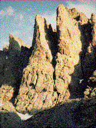

The Petit Grepon
The Petit Grepon
is one of Rocky Mountain National Park's most challenging and awesome climbs.
Nestled in the middle of the Cathedral Spires, the summit of the Petit
Grepon is a mere ten by thirty foot perch, but "placemat" may be a better term.
For those who are more interested in a less intimidating climb, we also offer
tours up Sharkstooth, a nearby summit offering excellent views of the Petit
Grepon.
Difficulty Level: Expert
Time: Full day
Physical stress: Extreme